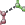

|
|
Style Toolbar |
The Workspace Style toolbar allows you to create and apply visual styles for the Workspace contents. These styles consist of combinations of molecular representation, color scheme, display or undisplay of classes of atoms, display of H-bonds and contacts, and generation and display of surfaces.
The style settings made with this toolbar are designed to add only those components specified, and leave any other style choices as they are. All style settings are stored as preferences, so that they persist across Maestro sessions.
| Apply style Set and apply a defined style. Clicking this button applies the defined style. Displays a menu with the following options:
|
|
| Reapply style when Workspace changes When the Workspace content changes, reapply the Workspace style, according to the options set in the Workspace Style Settings dialog box. |
|
|  | Contacts and H-bonds Select options for display of contacts and H-bonds. Opens the Contacts and H-Bonds panel, in which you can make settings. See the H-Bonds and Contacts Panel topic for more information on contacts and H-bonds. |
| Create receptor and ligand surfaces From this option menu you can create molecular surfaces for the binding site (Create Binding Site Surfaces), display or hide all surfaces (Display All and Hide All), and open the Manage Surfaces panel so that you have more control over which surfaces are displayed and how they are displayed. |
|